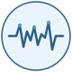
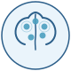
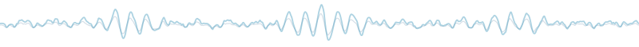

Research
Our lab investigates how fundamental brain processes shape mental health across development. Using Electroencephalography (EEG) alongside behavioral tasks, clinical assessments, self-report measures, and computational modelling, we study populations ranging from typically developing children to individuals with or at risk for autism spectrum conditions, psychosis, and related neurodevelopmental disorders. The long-term goal is to advance a developmental, mechanism-based framework of mental health that supports earlier identification of risk and contributes to more effective, individualized care.
Research Themes

Sensory Processing Dynamics
Examining how individual differences in sensory sensitivity and information processing shape neurodevelopmental pathways and confer vulnerability or resilience.

Neurobiological Markers of Vulnerability
Identifying and validating objective neurocognitive indicators for early detection and biologically informed characterization of mental health risk.
Mechanistic Modelling
Developing integrative and computational frameworks linking sensory and cognitive processes to symptom dimensions and broader mental health outcomes.
Sensory Processing Dynamics
The way the brain registers, filters, and prioritises sensory information varies considerably across individuals and these differences are not trivial. Atypical sensory responsivity is among the earliest observable features of neurodevelopmental conditions such as Autism Spectrum Disorder (ASD) and has increasingly been linked to broader mental health outcomes including anxiety and affective dysregulation.
Our work in this theme uses Electroencephalography (EEG) to capture the millisecond-level temporal dynamics of sensory processing. By examining Event-Related Potentials (ERPs) such as the P1/N1 complex, the mismatch negativity (MMN), and the N2/P3 we study how the brain detects, habituates to, discriminates, and evaluates between sensory inputs across development. We investigate these processes in both typically developing populations and clinical groups, asking how individual differences in sensory gating, sensory habituation, and evaluation relate to neurodevelopmental trajectories.
A key question is whether altered sensory processing is a vulnerability pathway, conferring risk for downstream difficulties in cognitive control, emotion regulation, and social functioning, or whether, under supportive conditions, heightened sensory sensitivity may also confer adaptive advantages. By tracking these processes longitudinally and across diagnoses, we aim to build a dimensional account of sensory responsivity that cuts across traditional diagnostic boundaries.
View publications on this theme →

Neurobiological Markers of Vulnerability
Early identification of mental health risk remains a major challenge, in part because current diagnostic systems rely heavily on behavioural symptoms that often emerge only after prolonged periods of difficulty. This theme focuses on identifying objective, neurophysiological indicators that can detect vulnerability before the full clinical picture has developed.
We use EEG-derived measures, including the P1/N1, mismatch negativity (MMN), N2, P3, and oscillatory markers such as theta synchrony and alpha power, as candidate biomarkers of neurocognitive vulnerability. These components reflect fundamental brain processes such as prediction error signalling, attentional resource allocation, and neural synchronisation, and have been shown to be altered in individuals at clinical high risk for psychosis, in ASD, and across other conditions.
Crucially, we adopt a transdiagnostic approach. Rather than searching for markers specific to a single disorder, we investigate which electrophysiological signatures index shared mechanisms of risk that cut across conditions such as ASD, ADHD, and schizophrenia. By applying identical paradigms across clinical and non-clinical populations at different developmental stages, we aim to map how these markers emerge, change, and predict outcomes over time, ultimately supporting earlier, biologically grounded identification of those who may benefit most from preventive support.
View publications on this theme →
Mechanistic Modelling
Establishing that a brain signal differs between groups is an important first step, but it does not explain how or why that difference arises or how it relates to the lived experience of symptoms. This theme aims to bridge that gap by developing integrative and computational frameworks that formally link sensory and cognitive processes to mental health outcomes.
Drawing on approaches from computational psychiatry and psychology, we use model-based analysis to move beyond group-level comparisons toward mechanistic accounts of individual variation. For example, predictive coding frameworks allow us to model how the brain combines prior expectations with incoming sensory evidence, and how disruptions in the precision-weighting of these signals may give rise to atypical perception, inflexible behaviour, or heightened distress. By fitting such models to EEG data, we can quantify latent cognitive processes that standard ERP analysis alone cannot capture.
A central goal is to connect these computational parameters to dimensional symptom profiles rather than categorical diagnoses. This means asking not “does group A differ from group B?” but “which parameters of sensory-cognitive processing predict where an individual falls on continuous dimensions of, for example, sensory sensitivity, anxiety, or social withdrawal?” In doing so, we work toward a mechanistic, person-level framework for understanding mental health, one that can inform both theory and the development of targeted, individualised interventions.
View publications on this theme →
Methods
Our research is mostly anchored in scalp-recorded Electroencephalography (EEG), which offers millisecond-level temporal resolution for tracking how the brain processes information in real time. The lab draws on a range of analytic approaches including Event-Related Potentials (ERPs), time-frequency decomposition, functional connectivity, and computational modelling used alongside behavioral tasks, clinical assessments, and self-report measures. Together, these approaches give us the temporal precision and analytic flexibility needed to link brain dynamics to behavior and mental health across development.
Interested in collaborating, or in our research? See our publications, or get in touch.